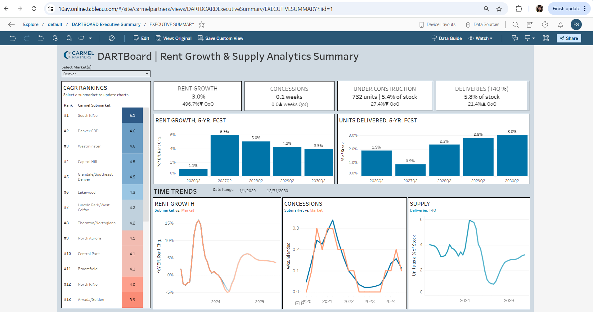
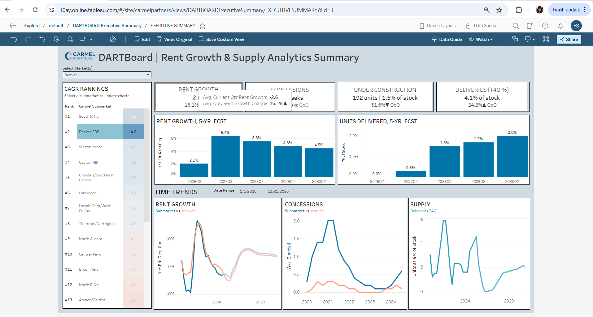
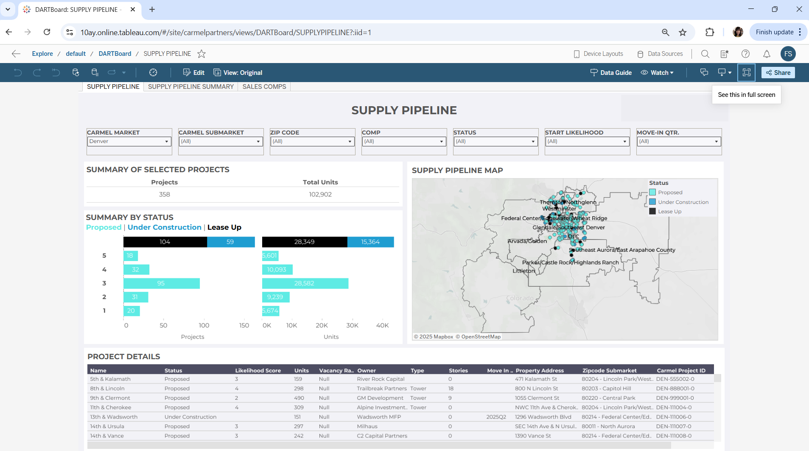
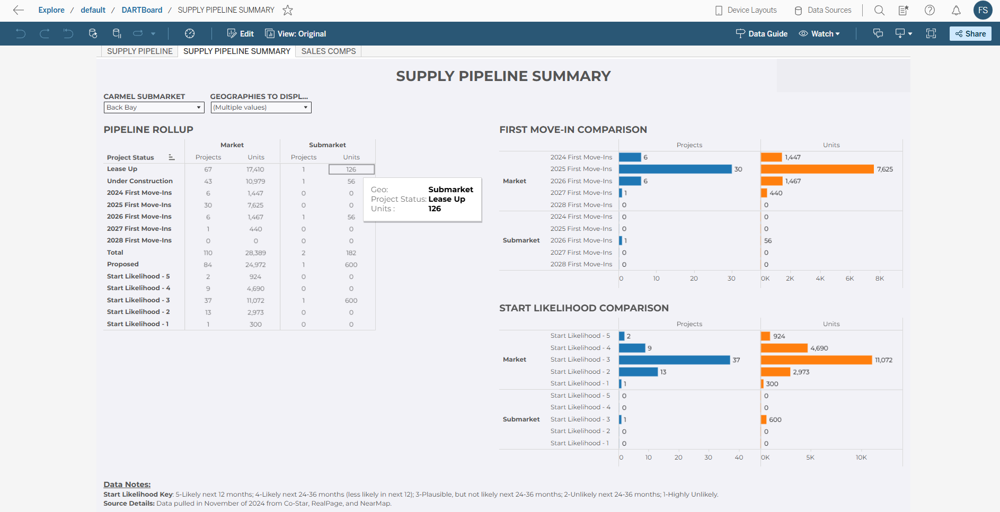
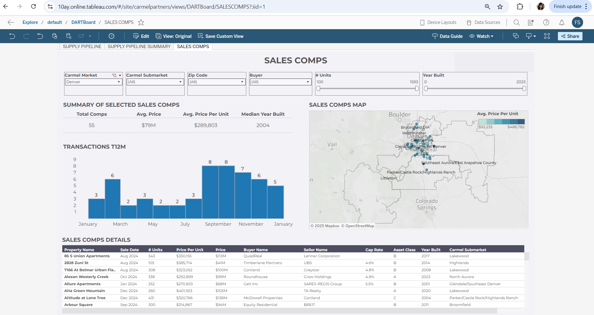

A multi‑page dashboard summarizing rent growth, supply pipeline activity, sales comps, and submarket performance across the Denver metro area. This dashboard was originally built for internal market analysis at Carmel Partners. Values shown here are fictionalized to protect proprietary data, while preserving the structure, segmentation, and analytical approach.

The landing page provides a high‑level summary of rent growth, concessions, construction activity, and deliveries across Denver submarkets. Forecast charts highlight expected rent growth and supply additions over the next five years, while time‑series views compare submarket performance against the broader market.

This landing page combines rent growth forecasts, supply delivery projections, and time‑series trends to provide a comprehensive view of market performance. Submarket‑level comparisons help identify outperforming and underperforming areas.

The supply pipeline view summarizes proposed, under‑construction, and lease‑up projects across the metro. Likelihood scoring helps estimate which projects are most likely to deliver in the next 12–36 months. The map visualizes geographic clustering of development activity.

This page aggregates pipeline activity by project status, move‑in year, and likelihood score. Comparative charts show how submarkets differ from the broader market in terms of expected deliveries and development risk.

The sales comps view summarizes multifamily transactions, including price per unit, buyer/seller profiles, cap rates, and asset class. A map highlights geographic patterns in pricing, while the table provides detailed property‑level insights.